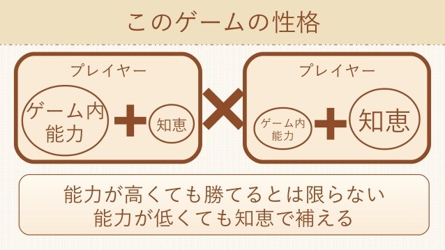
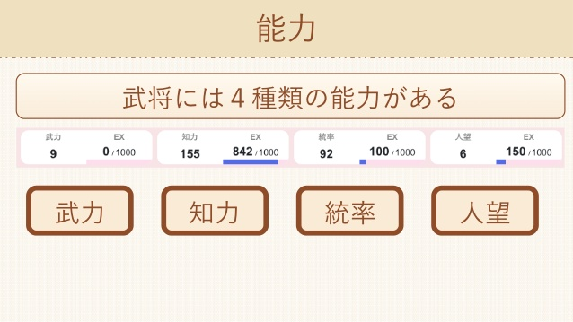
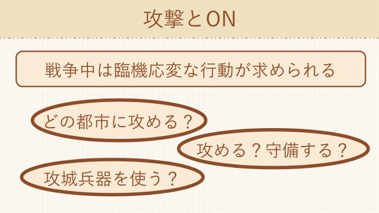
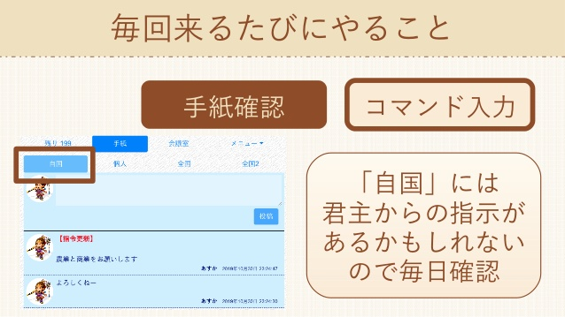
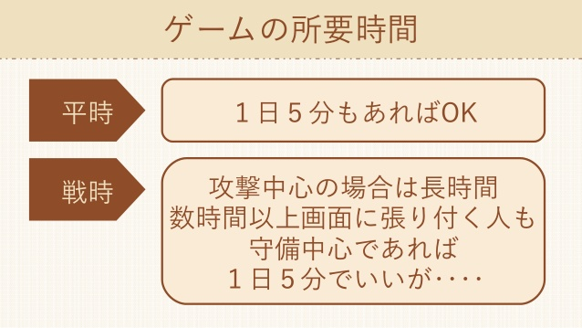

三国志NET KMY Version
オンライン × チーム協力
戦略を組み立てる
どの国と同盟を結ぼうか？どの国に侵攻しようか？
どの都市を内政しようか？どこに建築物を建てようか？
三国志NET KMY Versionは、
戦略
のゲームです。毎回変わる地形のうえでは、外交、内政、戦争、強化といった長期にわたる確固たる戦略が重要になります。

個性ある武将を育成
出身は何？どの能力が高い？
どの陣形を使う？何を重視して行動する？
あなたは１人の武将となって全土を駆け回ります。多彩な要素とあなたの個性ある行動によって、国もあなた自身も成長します。

リアルタイムで動く戦況
どの都市が落ちた？内政はどうなっている？
現在の守備と滞在武将は誰？
常に最新の情報が画面に反映されるため、現状に合った戦略をその場で練り、機敏に動くことができます。どのような小さな情報の更新も見逃すことなく、常にチェックできます。

他の武将と交流
ゲーム内チャットも完備。自分の国の武将同士で作戦の相談をする「自国」だけでなく、ゲームに登録している全員で交流できる「全国」もあります。
一度決めた作戦の遂行に向けて、自国内でのコミュニケーションは大きな鍵を握ります。「個人」で私信も可能。「全国」では、アットホームな雰囲気を感じ取ることができます。

平時は毎日５分、戦争中は数時間
ゲームは、内政と戦争の繰り返しです。内政のときから、戦争は始まっています。
ゲームには毎日ログインする必要がありますが、内政をしている間は5〜10分あれば一通りの作業は完了します。戦争中は数時間にわたってログインし続け、状況を見ながら臨機応変に対応することによって最大限のパフォーマンスを発揮できます。
他のゲームや作業の隙間時間にいかがでしょうか。

もっと知る
以下のスライドより、ゲームの概要を掴むことができます。
三国志NET KMY Versionの要素は数多くあり、全てを紹介するにはページ数が足りません。もっと知りたい場合は、下にある「もっと学習する」より他のスライドも読むことができます。
説明書を直接読むことで、さらに詳しく知ることができます。
＼プレイは完全無料、課金なし／
ゲームを始める
もっと学習する
Tweet